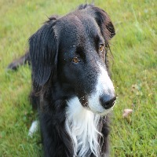
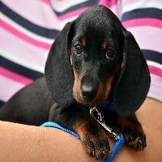
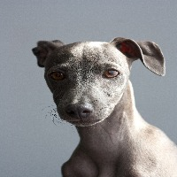

Created by MrBego
This website is an assignment from The Odin Project. The purpose of this website is to practice creating and designing a website.
Some Random Information.

The Border Collie dog breed was developed to gather and control sheep in the hilly border country between Scotland and England. They’re dogs with unlimited energy, stamina, and working drive, all of which make them a premier herding dog.

Dachshunds are scent hound dogs bred to hunt badgers and other tunneling animals, rabbits, and foxes. Hunters even used packs of Dachshunds to trail wild boar. Today their versatility makes them excellent family companions, show dogs, and small-game hunters.

Greyhounds were originally bred as hunting dogs to chase hare, foxes, and deer. Canines in this dog breed can reach speeds of 40 to 45 miles per hour, making them the Ferraris of the dog world.
God will not have his work made manifest by cowards.
Most people are about as happy as they make up their minds to be.
Call to action! It's Time!
Sign up for our product by clicking that button right over there!